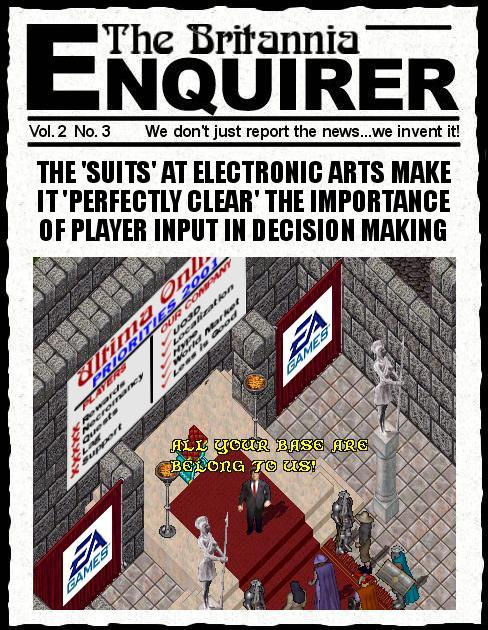
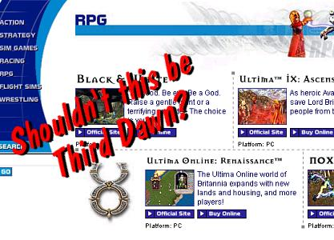
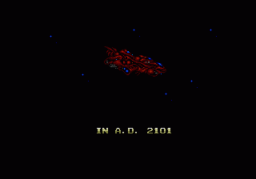

Now I don't want to get off on a rant here but...
OK, OK, so I jumped on the bandwagon of sites trying to come up with a use for the "All your base are belong to us" shtick, so sue me, but I think the screenshot above says a lot about the communication channels between Electronic Arts and the Ultima Online players. Right now there is a lot of stuff on the boards about the recent firing of the volunteers (seers, counsellors, elders, etc.) Like the rest of you, I too am disappointed to see the end of what I viewed as an important part of the UO experience, however I have refrained up to now from plastering my site with condemnations of Electronic Arts and dire predictions of the end of UO, etc. Here's why. In case you hadn't noticed it folks, Electronic Arts is not a one product company the way Origin Systems was. In the past before the takeover (and subsequent assimilation of Origin into that melting pot know as EA) Richard Garriot and Co. pretty well had to keep player desires in focus because if they failed to and the Ultima Series died, that was all there was and hey, personal castles in RL don't come cheap. Electronic Arts on the other hand have so many games out there right now that if UO was to fold tomorrow, the ramifications to EA's continued survival would be about as significant as whether Colby or Tina was the final Survivor.
For those of you who haven't noticed lately here are just some of the games in the EA stables:
That's only some of them. Starting to see a pattern here? And just to give you an idea how hugely important Ultima Online is to EA, here is a shot of the EA store page on their official website. What's wrong with this picture? Ummmmm, seems nobody told them at EA Store that UO Renaissance had been replaced by UO Third Dawn, either that or UO is just such a low priority that it ain't even worth updating the web page to reflect the new title..

Sooner or later I guess I am trying to get to a point of some kind. Well, like many others I was also saddened at the sacking of the volunteers. The Seers, Councellors, Elders and others added much to the quality of life in Britannia and they will be missed. But will complaining on the boards bring them back? Nope. What has hundreds of players complaining about Necromancy never being implemented got us? Well, it has got us Necromancy never being implemented, in other words, 'didley'. There are obviously people out there who still believe that EA gives a tinker's damn what we players think. Unlike those few perpetually optimistic dreamers, I gave up thinking that about the time that I heard Origin had sold out to EA. There is one and only one thing that EA cares about and that is the bottom line. If you truly want your voice to be heard there is one and only one way that you can do it and that is by cancelling your account(s), period. Otherwise just sit back and enjoy the ride. EA owns UO, lock stock and barrel. All your $9.95 a month gets you is the space your character occupies in the game, and if you are a lucky enough to be a homeowner ingame then you also get a place to store your motherlode of virtual treasure like virtual cow statues, virtual rocks, virtual crystal balls etc.
So before I leave you, I will just list the things that I think are the major bad decisions that have been made over the last couple of years. You may agree or disagree, either way it won't change a thing. What it will do is make me feel a bit better having got it off my chest, sorta like the way giving another driver who has just cut you off the finger and cursing at him loudly, it doesn't change the way he drives but at least you had the opportunity to vent.
Here they are:So, if it doesn't change anything, what is the point of my putting down this list of things that piss me off about the game? Well it's sorta like the list I made up when I decided to quit smoking. One day I just got to the end of reading it and said "if there is so goddamn many reasons to quit, why the f*ck am I still smoking?" and guess what ... I didn't have an answer. So I quit. One day I am going to read the list above and the ask myself "If there is so many things you don't like about the way the game is evolving, why the hell are you still playing? And when the answer comes up "Damned if I know", then I will quit. Meantime ... cya on Pacific :)
Of course that's just my opinion ... I could be wrong.
later ... Tryon
|  | Don't Have a Clue Where "All Your Base" came from or what it's about? Click the Image To Go to the Full Story. |